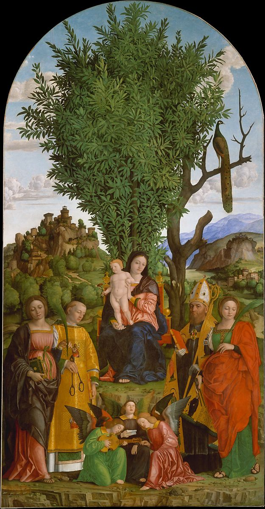

<head>
<meta charset="UTF-8" />
<meta name="keywords" content="drawing, painting" />
<meta name="description" content="drawings by Sunjy" />
<title>Sunjy</title>
<link rel="shortcut icon" type="image/x-icon" href="../../mImages/mCommon/favicon.ico" media="screen" />
<link rel="stylesheet" type="text/css" href="../../mCsses/mCommon/mCssA.css" />
<link rel="stylesheet" type="text/css" href="../../mCsses/mCommon/mCssB.css" />
<link rel="stylesheet" type="text/css" href="../../mCsses/mCommon/mCssC.css" />
<link rel="stylesheet" type="text/css" href="../../mCsses/mCommon/mCssD.css" />
<link rel="stylesheet" type="text/css" href="../../mCsses/mContent/mCssA.css" />
<link rel="stylesheet" type="text/css" href="../../mCsses/mContent/mCssB.css" />
<link rel="stylesheet" type="text/css" href="../../mCsses/mContent/mCssC.css" />
<link rel="stylesheet" type="text/css" href="../../mCsses/mContent/mCssD.css" />
</head>
<script type="text/javascript" src="../../mScripts/mContent/mContentAA.js" /></script>
<script type="text/javascript" src="../../mScripts/mContent/mContentAB.js" /></script>
<script type="text/javascript" src="../../mScripts/mContent/mContentAC.js" /></script>
<script type="text/javascript" src="../../mScripts/mContent/mContentAD.js" /></script>
<script type="text/javascript"></script> 
<script type="text/javascript">
document.write('<div class="mImgAbsolute"></div>');
/*
document.write('<p class="mFontSizeBColor" />From a white paper...</p>');
document.write('<table class="center"><tr><td>');
document.write('');
document.write('</td></tr></table>');
*/
</script>


<script type="text/javascript">
document.write('<p class="mFontSizeBColor" />Madonna and Child with Saints</p>');
document.write('<p class="mFontSizeSColor" />By Girolamo dai Libri, ca. 1520. The saints (left to right) are Catherine of Alexandria, Leonard, Augustine, and Apollonia.<br><br>Painted in about 1520 for the Augustinian church of San Leonardo nel Monte outside Verona, the picture was described at length by the sixteenth-century biographer Giorgio Vasari, who especially admired the landscape and enormous laurel tree. While the Madonna and Child reflect the work of Andrea Mantegna, the distant hill crowned with a fortress and the dead tree are taken over directly from Dürer&#39;s well-known engraving of Saint Eustace. The juxtaposition of the dead tree with the flourishing laurel refers to Death and Resurrection, while the peacock is a traditional symbol of immortality.<br><br>A versatile artist, Girolamo dai Libri was equally famous as an illuminator of books, whence his name dai Libri (&#34;of the books&#34;). Of modern manufacture, the frame is based on Renaissance prototypes.</p>');
document.write('<table class="center" /><tr><td>');
document.write('<br>Painted in about 1520 for the Augustinian church of San Leonardo nel Monte outside Verona, the picture was described at length by the sixteenth-century biographer Giorgio Vasari, who especially admired the landscape and enormous laurel tree. While the Madonna and Child reflect the work of Andrea Mantegna, the distant hill crowned with a fortress and the dead tree are taken over directly from Dürer&#39;s well-known engraving of Saint Eustace. The juxtaposition of the dead tree with the flourishing laurel refers to Death and Resurrection, while the peacock is a traditional symbol of immortality.<br><br>A versatile artist, Girolamo dai Libri was equally famous as an illuminator of books, whence his name dai Libri (&#34;of the books&#34;). Of modern manufacture, the frame is based on Renaissance prototypes." />');
document.write('</td></tr></table>');
</script>


